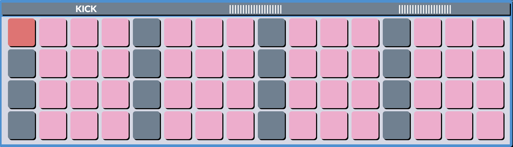

Build loop-based beats with 6 instruments, 384 launch-pads, and as MANY friends as you like.
Each pad on each instrument panel represents one 1/16th note, the grey
pads are quarter notes, there are 4 measures, and the metronome cycles
through in red:

Click the buttons at the top of the page to toggle Mute On/Off.
The percussion instrument pads simply toggle On/Off, while the melodic instrument pads cycle
through the Javanese slendro scale following this color code: